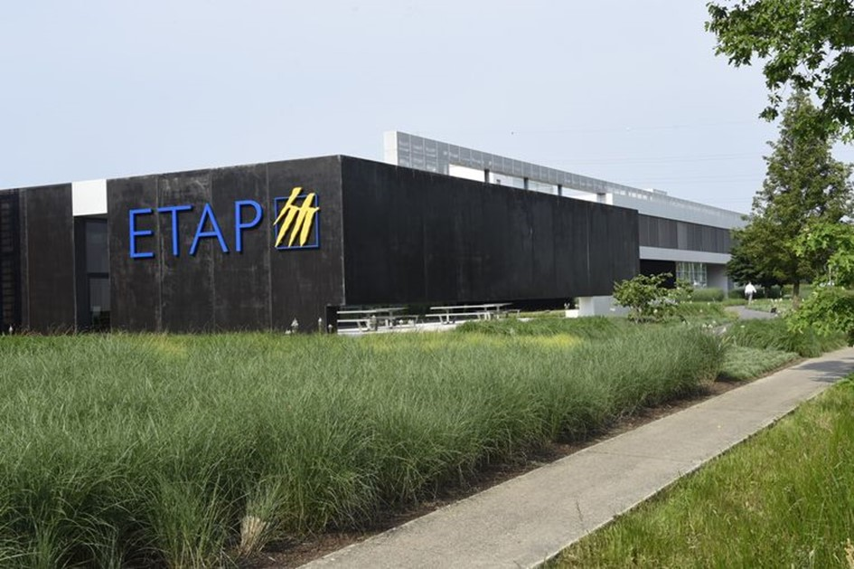
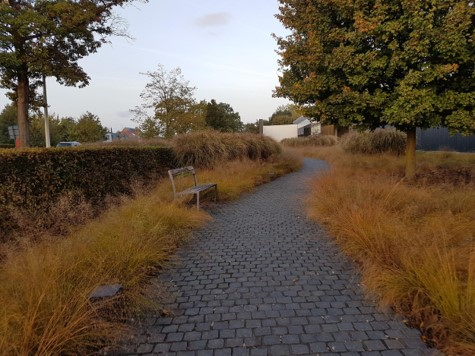
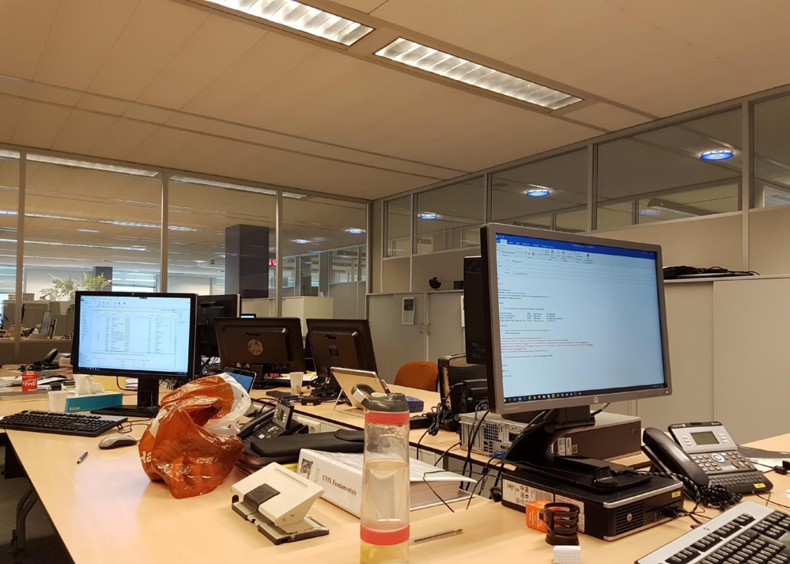
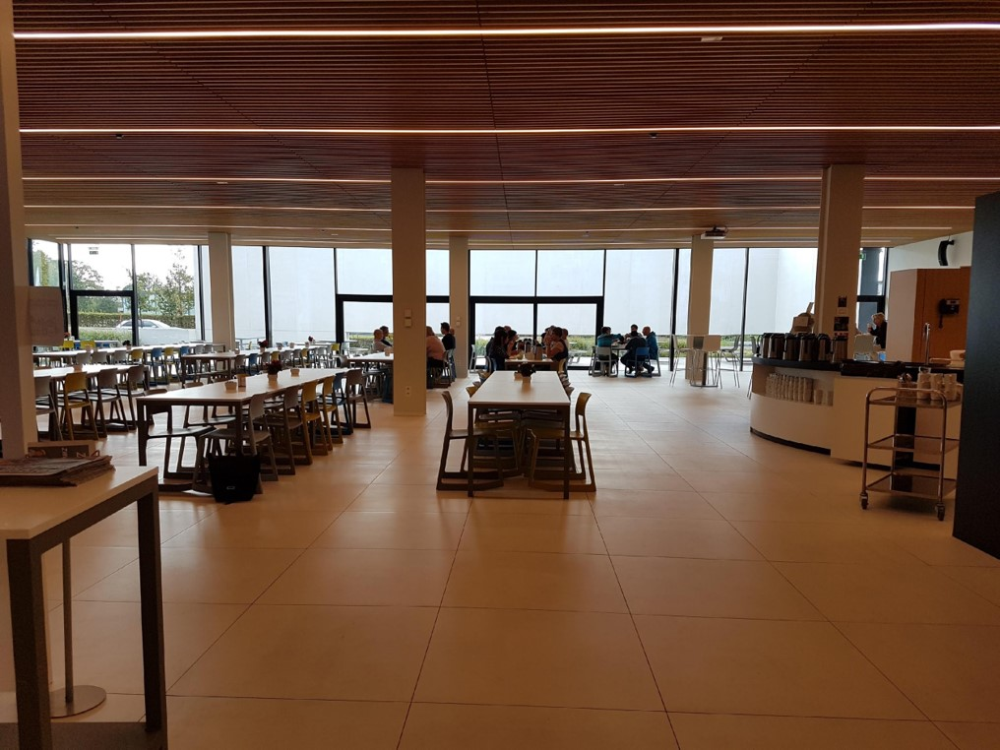
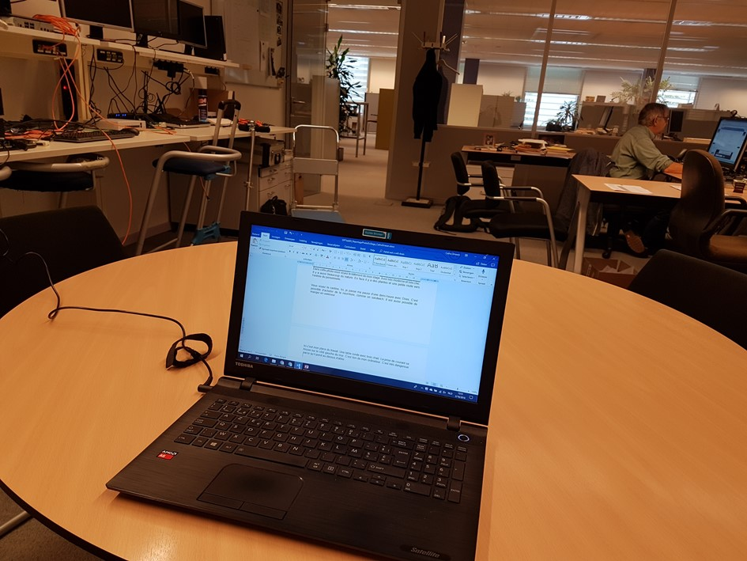
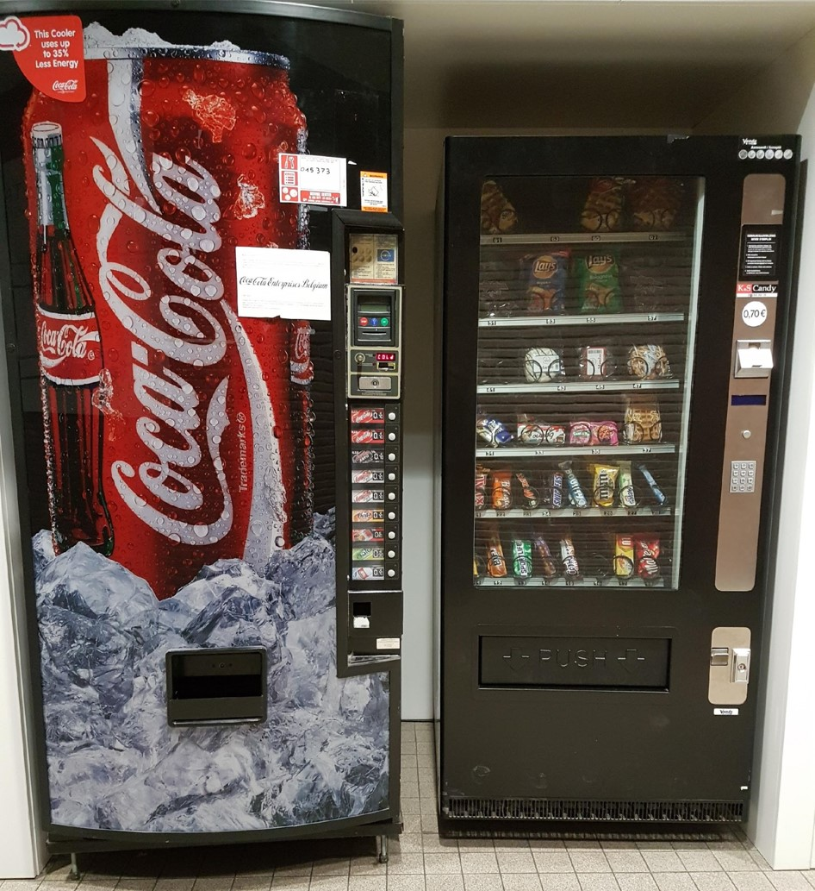
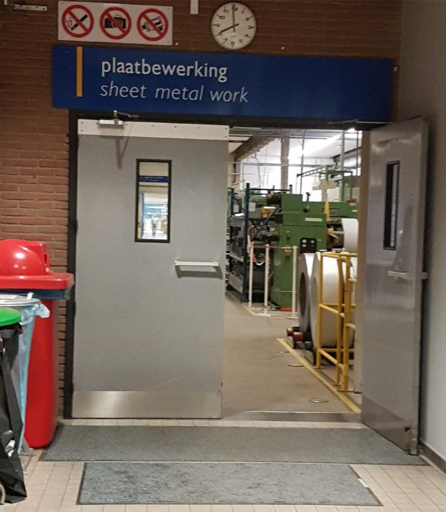

Reportage du photo:


Dans cette photo vous voyez le bâtiment de mon stage. Il est très moderne et très chic. Il y a aussi beaucoup du nature. En face il y a des plantes et une petite route vers l’entrée du personnelle.

Ici c’est le département de IT. Il y a des bureaux et des ordinateurs de employées. Ils travaillent et mangent ici. Ils sont avec quatre peson qui travaille dans cette chambre.

Vous voyez la cantine. Ici, je passe ma pause d’une demi-heure avec Dries. C’est possible d’acheter de la nourriture, comme un sandwich. Il est aussi possible de manger en extérieur.

Ici c’est mon lieu de travail. Une table ronde avec trois chaises. La prise de courant se trouve sur le côté gauche du mur. C’est loin de mon ordinateur portable. C’est très dangereux parce qu’il bloque le couloir

Dans le couloir, à côté de la sortie, se trouve un distributeur automatique de bonbons et de boissons. Tout coûte seulement 70 cents. Toujours après 16 heure, je choisis une chose à manger après une longue journée.

Derrière ces portes est la production. Ici, les lampes seront produit. C’est très calme ici. Ils écoutent le posté émetteur de MNM.